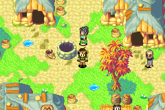
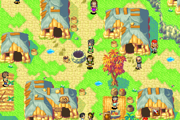
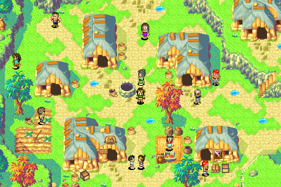

Quality of Life screen
Pause → Quality of Life (where the unused Sleep entry was). Change most of the options below without leaving the game, each with a short help line. Up and Down pick a setting, Left and Right change it, B goes back.
Exploration
- Walking speedChoose Normal, 1.5×, 2× or 3×, also while sailing. The Broken Seal keeps the original pace during the Colosso trials.Pause → Quality of Life
- EncountersSet random encounters to Normal, Half, Off or Double.Pause → Quality of Life
- Message speedSet how fast dialogue appears, or choose Instant.In-game Settings
- No slowdownReduce the original game's slowdown during play.Pause → Quality of Life
- Auto Field PsynergyStand in front of something that needs Psynergy and press A: the game casts the right one, using the usual PP. Talking and checking things still come first.Pause → Quality of Life or F1 → Game
- Psynergy ringBind a button to Psynergy Menu for a ring of your party's field Psynergy. Left and Right turn it, A casts, and L, R, L2 and R2 hold shortcuts. Works on the world map too.F1 → Hotkeys
- Walk as anyoneOutside battle you walk as your party leader, or pick a character. Others use their walking pose for moves like pushing or climbing.F1 → Game → Walking character
- Djinn TrackerSee your Djinn by element. Hover over a missing one for a hint.Pause → Quality of Life, launcher settings or F1 → Game
- Treasure TrackerTracks collected treasure, shows what each one holds (randomized contents too) and opens to your current area.Pause → Quality of Life, launcher settings or F1 → Game · on Android, the menu's Trackers page
- Menu on Select onlyA no longer opens the menu when nobody's in front of you; Select still does, and A still talks, opens chests and reads signs.Pause → Quality of Life or F1 → Game
- Fallen heroesFade a knocked-out hero's spot in the field menu's HP/PP box, all the way to a gap.F1 → Game
Better Psynergy
Pause → Quality of Life → Better Psynergy. Off by default. Turn each part on or off on its own.
- Faster castsField casts run at 2× speed, including Move in both games and Cyclone, Tremor and Grind in The Lost Age. The game returns to normal speed after the cast.
- Wider RevealReveal covers the whole screen in any view size. You can walk twice as far from where you cast it. The timer stays the same.
- Retreat travelCast Retreat on the world map to pick a town you've visited, also while sailing in The Lost Age. Cancel for free. In dungeons, Retreat takes you to the entrance.
Randomizer & Challenge Mode
Set up at New Game, after you name your hero. Both are still experimental.
- RandomizerTick what to shuffle: Weapons, Armor, Items, Coins, Psynergy, Enemy Skills and Djinn. Treasure comes from one pool, so a coin jar can hold a weapon, and rare shop gear is sold once. Fair Play keeps runs balanced. Random Psynergy is given per class, so your Djinn still decide what a hero can cast.New Game → Randomize
- Seeds and run sheetEvery randomized run has a Seed. Type a friend's Seed to play the same run. The run sheet shows where everything ended up.F1 → Game
- Challenge ModeSolo, Duo or Triple: only your chosen Adepts fight. In The Lost Age you can pick from all eight heroes. No cheats, transfers or Seamless mode.New Game → Challenge run
- Skip the openingStart The Broken Seal on the world map after Sol Sanctum, or The Lost Age outside Idejima.New Game
Battles & cheats
- DifficultyNormal, Hard, Scaled or Hard Scaled. Hard gives enemies 1.5× HP and 1.25× Attack and Defence; Scaled brings weaker enemies up to your party's level.New Game or in-game Settings
- Battle speedOff, 2× or 4×. The game's Select button cycles through them while fighting.Pause → Quality of Life or Select in battle
- RetargetIf a move's target has already fallen, it hits another enemy instead of being wasted. Party does this for your heroes, Everyone for enemies too.Pause → Quality of Life
- Custom Battle ModeAt the Battle Arena receptionist, pick unlocked monsters or bosses, set how many to fight, match your party's strength, and choose the battle scenery.Battle Arena · on by default, with a switch in launcher settings
- Enemy HP barsSee an enemy's remaining HP as a red bar and a number when choosing a target.Pause → Quality of Life or F1 → Game · off by default
- CheatsInfinite HP and PP, multipliers for XP, coins and item drops, a Save editor for coins, levels, items and Djinn, and Retreat to the games' hidden test rooms.F1 → Cheats or F11 · not in Challenge Mode
Picture
- Original, Wide and Extra WideSee more of rooms, the world map and battles in Wide or Extra Wide. Original uses the GBA view.Pause → Quality of Life → View size · Compare the views
- Window and displaySet window size, fullscreen, aspect ratio, sharp pixels and V-Sync. Aspect options include original 3:2, 4:3, 16:10, 16:9, Window and Pixel-perfect fit.F1 → Video · aspect ratio also in Pause → Quality of Life
- Colour profilesChoose from presets such as Raw, Handheld, Natural, Warm and David's OG GBA Colours, or set your own saturation, hue, brightness, warmth and darkening. Colour vision options are available too.F1 → Video → Colours
- Screen filters and flicker reductionTry Bilinear, Sharp bilinear, LCD3x, CRT Lottes, xBR or ScaleFX, and tune them with sliders while you watch. Flicker reduction softens rapid GBA-style flashing.F1 → Video → Screen filter
Same scene, three view sizes
A town in The Lost Age.



Sound & music
- Volume and muteAdjust game volume or mute the sound. You can also mute audio only while fast-forwarding.F1 → Audio and Speed
- Music modsReplace the soundtrack with looping FLAC recordings. Use Juste-D's remasters or make your own pack.Launcher settings or F1 → Audio · Music mod setup
- Track swapsSearch for an area and choose its music. Set battle tracks separately, randomize individual choices or shuffle music across the game.F1 → Music
Controls & speed
- Keyboard and controllerRebind game buttons and hotkeys. Use the Controller and Alternate columns to bind movement to the D-pad and stick. Bindings are shared by both games, and you're asked before a key is used twice.F1 → Controls and Hotkeys
- Fast forwardHold Tab to fast-forward. Set a speed cap, leave it uncapped, or bind a toggle. On Android, tap the round >> button; drag it wherever suits your thumb.F1 → Speed and Hotkeys
- On-screen buttonsOn Android, drag the D-pad, A, B, Select, Start, L and R wherever your thumbs like them, and resize them one at a time or all together. Don't use fast forward? Hide the >> button. Controllers work too, with their own Hotkeys page.Menu → Controls → Place on-screen buttons
- Auto fire, pause and resetUse auto fire for A or B, pause with Shift+P, or bind Soft Reset to return to the title screen. The FPS counter is available with F.F1 → Hotkeys
- Settings overlayOpen settings with F1. Use the mouse, keyboard or controller, and drag the menu to move or resize it.
- Confirm before quittingThe game pauses and warns you about unsaved progress before quitting. Each game remembers its own setting.F1 → Game
Saves & transfer
- Eight save files and an AutosaveContinue, Save, Copy and Erase scroll through eight files. With Autosave on, entering a new room saves to a separate Autosave; your own saves stay yours.New Game, Pause → Quality of Life or F1 → Game
- SavestatesNine slots that save the game exactly where you are.Save with Shift+F2–F10 · load with F2–F10
- Seamless modeFinish The Broken Seal, choose a Clear Data slot and continue into The Lost Age with your team.Launcher settings or Pause → Quality of Life (The Broken Seal)
- Import Clear DataStart The Lost Age with your Broken Seal team, Djinn, items and story progress. You can also update an existing Lost Age file before the reunion. The update keeps a backup.New Lost Age game or F1 → Game → Update from The Broken Seal
- Import emulator saveBring a save from mGBA, VisualBoyAdvance or RetroArch. The launcher works out which game it belongs to and keeps your old file in Saves/Imported. Experimental.Launcher, top left
- Language savesEach language has its own saves. After preparing a new language, the launcher can copy an English in-game save into it. Savestates stay with their original language.
Launcher & reporting
- One launcher for both gamesRuns on Windows, Linux (including Steam Deck) and Android phones. Pick a game and supply your own matching ROM. The launcher prepares it on your PC, remembers the file, and can start the game as soon as it's ready.Getting started
- Languages and versionsEnglish, Spanish, Italian, French and German, plus the Brazilian Portuguese and Polish fan translations from a patched ROM. Our own menus speak each language too. Each has its own saves.Flags below the cartridges in the launcher
- RomhacksGolden Sun Reloaded, Dawn of Djinn, Jenna Edition, Maheo Hack and Polish Balance Age, from your patched ROM. Pick it once and it stays in the list, with its own saves. Experimental. Supported versionsRomhack button under each cartridge
- Update checksThe launcher tells you when a new version is available.Downloads and release notes
- Bug reportsPress F12 to capture the last two seconds. Close the game to review and send the report. You can also turn on crash logging.F12 · F1 → Help for crash logging
- Skip the ROM checkTry another modified game file by turning off the file check. Only the versions listed above are supported.Launcher settings
- Use fewer system resourcesLimit CPU and memory use while the launcher prepares a game. Preparation may take longer. While it builds, the launcher shows the time so far, last time's, and whether it's still working.Launcher → Build or Rebuild